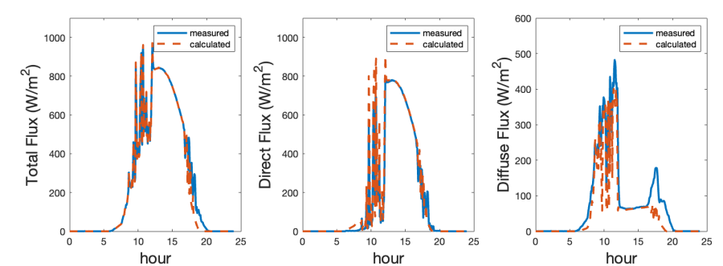

|
|
|

| |
|
|
|
|
| |
| Dependencies | None. |
|---|---|
| CMakeLists.txt | set( PLUGINS "solarposition" ) |
| Header File | include "SolarPosition.h" |
| Class | SolarPosition |
This plugin calculates the position of the sun, and also implements other models for solar fluxes as well as longwave fluxes from the sky. Model theory and equations are given in the sections below.
| Constructors |
|---|
| SolarPosition( helios::Context* context) |
| SolarPosition( float UTC_hrs, float latitude_deg, float longitude_deg, helios::Context* context) |
The SolarPosition class can be initialized by simply passing a pointer to the Helios context as an argument to the constructor. This gives the class the model access to the time and date currently set in the Context. The model must also know certain parameters about the simulated location, in particular the offset from UTC time, latitude, and longitude. A description of these parameters are given in the table below. These can be supplied using the second constructor listed in the table above. If the Context is the only argument supplied to the constructor, default values are assumed for UTC, latitude, and longitude (see table below).
| Input Parameter | Description | Convention | Default Behavior |
|---|---|---|---|
| UTC | Difference in hours between Coordinated Universal Time (UTC) for a particular location. See the figure below to determine a particular UTC offset. | UTC offset value is positive moving West. | +8:00 |
| latitude | Geographic coordinate that specifies the north–south position of a point on the Earth's surface in degrees. | Latitude is positive in the northern hemisphere. | +38.55 |
| longitude | Geographic coordinate that specifies the east-west position of a point on the Earth's surface in degrees. | Longitude is positive in the western hemisphere. | +121.76 |
The solar position model was implemented following the description in Chapter 1 of Iqbal (1983).
The day angle \(\Gamma\) given as the polar angle of the earth relative to the sun ( \(\Gamma=0\) on Jan. 1) is calculated as
where DOY is the Julian Day of the year.
The solar declination angle is then calculated as
The equation of time is calculated as
The hour angle is given by
with
and
Finally, the solar elevation angle is given by
and the solar azimuthal angle is given by
Note that \(\mathrm{cos}^{-1}\) gives angles between 0 and \(\pi\), so to get a \(\phi_s\) between 0 and \(2\pi\), we take \(\phi_s=2\pi-\phi_s\) if \(LST>12\).
Clear-sky solar fluxes are calculated using the 'REST-2' (Reference Evaluation of Solar Transmittance, 2 bands) model of Gueymard (2008). REST-2 is a high-performance broadband radiative transfer model derived from parameterizations of the SMARTS spectral code, and is widely recognized as one of the most accurate clear-sky models available.
The model uses a two-band spectral scheme that separately treats the visible band (290-700 nm) and near-infrared band (700-4000 nm). In the visible band, attenuation is dominated by Rayleigh scattering and aerosol extinction, while the NIR band is primarily affected by water vapor absorption. For each band, the model calculates independent broadband transmittances for:
Direct beam irradiance is computed from the product of these transmittances, while diffuse irradiance uses a two-layer scattering scheme that accounts for aerosol forward scattering and backscattering from the atmosphere-ground system. The model partitions the total radiative flux into direct and diffuse components suitable for agricultural, solar energy, and climate applications.
For applications requiring high spectral resolution (e.g., photosynthesis, remote sensing), the plugin implements the SSolar-GOA spectral radiative transfer model from Cachorro et al. (2022). This model computes bottom-of-atmosphere spectral irradiance from 300-2600 nm at 1 nm resolution.
The SSolar-GOA model uses the Wehrli (1985) extraterrestrial solar spectrum corrected for Earth-Sun distance, then applies atmospheric transmittances for:
The model also accounts for surface-atmosphere multiple reflections based on surface albedo and atmospheric spherical albedo.
Parameter Derivation: The implementation uses the same atmospheric inputs as the REST-2 model (pressure, temperature, humidity, turbidity). Additional parameters are derived automatically: precipitable water (Viswanadham 1981), ozone column (van Heuklon 1979), Ångström alpha (1.3), surface albedo (0.2), aerosol single scattering albedo (0.90), and asymmetry parameter (0.85).
Output Format: Results are stored in Context global data as vectors of (wavelength, irradiance) pairs (helios::vec2) with user-defined labels. Three spectral components are computed: global irradiance on horizontal surface, direct irradiance normal to sun direction, and diffuse irradiance on horizontal surface (all in W/m²/nm).
The longwave radiation flux emanating from the clear-sky is modeled following Prata (1996).
The model surmounts to calculating the effective emissivity of the sky as a function of precipitable water in the atmosphere
where \(u\) is the wator vapor path length (cm of precipitable water) which can be estimated following Viswanadham (1981) for example.
The downwelling longwave radiation flux on a horizontal surface is given by
where \(\sigma=5.67\times10^{-8}\) W/m2-K4, and \(T_a\) is the air temperature in Kelvin measured near the ground (say 2 m height).
The direction of the sun can be queried in one of several ways: a Cartesian unit vector pointing in the direction of the sun, a spherical coordinate describing the direction of the sun, the elevation angle of the sun, the zenithal angle of the sun, and the azimuthal angle of the sun. The functions to query these quantities are given in the table below. Each of these functions calculates the solar direction based on the current time and date set in the Context (see setTime() and setDate()), and the UTC, latitude, and longitude specified in the SolarPosition constructor.
| Direction Quantity | Function |
|---|---|
| Unit vector pointing toward the sun. | SolarPosition::getSunDirectionVector() |
| Spherical coordinate vector pointing toward the sun. | SolarPosition::getSunDirectionSpherical() |
| Elevation angle of the sun (radians). | SolarPosition::getSunElevation() |
| Zenithal angle of the sun (radians). | SolarPosition::getSunZenith() |
| Azimuthal angle of the sun (radians). | SolarPosition::getSunAzimuth() |
Below is an example of how to use the SolarPosition mode to calculate the sun angle.
The SolarPosition plugin supports setting atmospheric conditions globally in the Context, which allows them to be easily shared across different plugins. This is the recommended approach for setting atmospheric parameters.
To use this approach, first set the atmospheric conditions using the SolarPosition::setAtmosphericConditions() method. This stores the atmospheric parameters as global data in the Context with the labels: atmosphere_pressure_Pa, atmosphere_temperature_K, atmosphere_humidity_rel, and atmosphere_turbidity.
The atmospheric conditions can be retrieved at any time using SolarPosition::getAtmosphericConditions().
The turbidity parameter used in the SolarPosition plugin is Ångström's aerosol turbidity coefficient (β), which represents the aerosol optical depth (AOD) at 500 nm reference wavelength. This parameter quantifies the amount of aerosols (dust, pollution, haze) in the atmosphere that scatter and absorb solar radiation.
Important: This turbidity definition is NOT the same as "Linke turbidity" (TL), which is commonly used in some other solar radiation models. Linke turbidity typically ranges from 2-6, while Ångström turbidity (AOD) typically ranges from 0.02-0.4. The two are related but use different scales.
The turbidity value is used in the Ångström turbidity formula:
\[ \tau_{aerosol}(\lambda) = \beta \left(\frac{\lambda_{ref}}{\lambda}\right)^{\alpha} \]
where β is the turbidity parameter (AOD at 500 nm), λ is wavelength, λref = 500 nm, and α is the Ångström exponent (typically ~1.3).
Guidance for selecting turbidity values:
Higher turbidity values result in:
| Parameter | Description | Validation | Example Value |
|---|---|---|---|
| pressure_Pa | Atmospheric pressure in Pascals (near the ground) | Must be > 0 | 101,325 Pa (1 atm) |
| temperature_K | Air temperature in Kelvin (near the ground) | Must be > 0 | 300 K (27°C) |
| humidity_rel | Air relative humidity (near the ground) | Must be 0-1 | 0.6 (60%) |
| turbidity | Ångström's aerosol turbidity coefficient (β), which represents the aerosol optical depth (AOD) at 500 nm reference wavelength. Note: This is NOT Linke turbidity, which uses a different scale (typically 2-6). Typical values: 0.02 (very clear sky), 0.05 (clear sky), 0.1 (light haze), 0.2-0.3 (hazy), >0.4 (very hazy/polluted). Higher values indicate more aerosols in the atmosphere, which reduces direct solar flux and increases diffuse fraction. | Must be ≥ 0 | 0.02 (default clear sky) |
The solar flux can be calculated using the REST-2 model of Gueymard (2008) using the SolarPosition::getSolarFlux() function. IT IS CRITICAL TO NOTE THAT THE CALCULATED FLUX IS FOR A SURFACE PERPENDICULAR TO THE SUN DIRECTION. To get the flux on a horizontal surface, multiply by the cosine of the solar zenith angle.
Methods are available to get the incoming solar radiation flux perpendicular to the direction of the sun 1) for the entire solar spectrum (SolarPosition::getSolarFlux()), 2) for the PAR band (SolarPosition::getSolarFluxPAR()), and 3) for the NIR band (SolarPosition::getSolarFluxNIR()).
The very similar function SolarPosition::getDiffuseFraction() calculates the fraction of the total flux that is diffuse. The fraction that is direct is simply one minus the diffuse fraction.
Example code for using these solar flux functions is given below.
The predicted solar flux may not perfectly match local predicted solar fluxes due to uncertainty in the local turbidity value. There is a built-in routine to calibrate the turbidity based on measured radiative fluxes.
For the calibration, you must load radiation flux data into a timeseries within the Context. There must be at least one clear-sky day in the timeseries data, and the radiative fluxes must be for the entire solar spectrum in units of W/m2. You can then use the SolarPosition::calibrateTurbidityFromTimeseries() method. This method takes one argument, which is a string corresponding to the timeseries variable name containing the radiation flux data.
The REST2 model for solar fluxes was developed for clear-sky conditions and cannot directly be used when clouds are present. If incident solar radiation data is available (e.g., from a weather station), this can be used to calibrate the model to account for the possible presence of clouds. A simple model is described below for doing so.
Consider \(R_{meas,h}\) to be the measured all-wave incoming solar radiation flux on a horizontal plane (clear or cloudy conditions), and \(R_{clear}\) to be the predicted all-wave incoming solar radiation flux predicted by the REST2 model for clear-sky conditions perpendicular to the direction of the sun. This flux can be projected onto the horizontal plane according to
\[ R_{clear,h} = R_{clear}\mathrm{cos}\,\theta_s. \]
The diffuse fraction can be approximated as
\[ f_{diff} = 1-\frac{R_{meas,h} - R_{clear,h}}{R_{clear,h}}, \]
where it is enforced that \(0\leq f_{diff} \leq 1\). The resulting flux that is output from the model is (flux perpendicular to the sun)
\[ R_{model} = R_{clear}\frac{R_{meas,h}}{R_{clear,h}}. \]
In order to enable flux calibration for cloudy conditions, you must 1) Load timeseries data into the Context containing the measured all-wave solar radiation flux. This data must cover the entire period of the simulation. 2) Call SolarPosition::enableCloudCalibration(), which requires a string corresponding to the timeseries data value reference in (1). Below is a code example:
An example of the above model applied to actual direct-diffuse partitioned radiation data using a shadowband radiometer is shown below. It should be emphasized that the above model is a relatively simple approximation that produces reasonable fluxes, but more accurate predictions are possible and require much more complicated models.

For applications requiring wavelength-resolved irradiance (e.g., photosynthesis models with wavelength-dependent quantum yield, remote sensing, hyperspectral image simulation), the SolarPosition::calculateSpectralIrradiance() method computes high-resolution spectral irradiance using the SSolar-GOA model.
This method uses the same atmospheric conditions set via SolarPosition::setAtmosphericConditions(), automatically deriving additional parameters (water vapor, ozone column) as needed. Results are stored in Context global data for use by other plugins (e.g., radiation plugin for ray tracing with spectral sources).
Example code for calculating spectral irradiance:
Three separate methods are available for the different spectral components:
Each method accepts an optional resolution parameter (default 1 nm) allowing wavelength downsampling. For example, resolution_nm=10.0 produces 231 wavelengths instead of the native 2301.
The downwelling longwave radiation flux from the sky can be calculated using the SolarPosition::getAmbientLongwaveFlux() function. This function takes the air temperature and humidity as arguments, which are defined in the same was as for the SolarPosition::getSolarFlux() function described above. The value returned by the function is the clear-sky downwelling longwave radiation flux on a horizontal surface in W/m2.